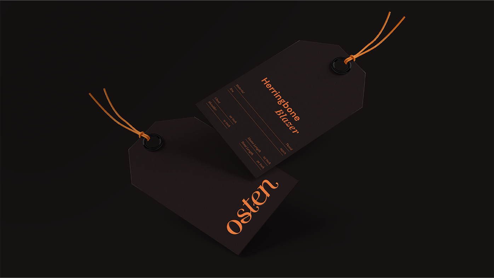
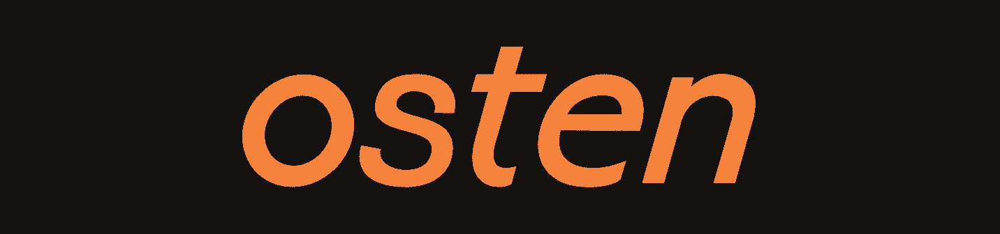
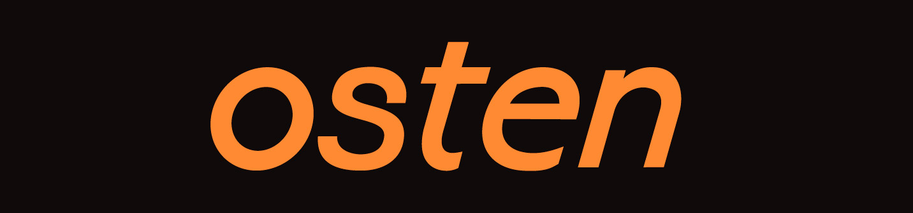
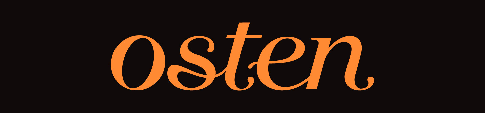

Website Landing Page
The wordmarks are a blend of modern and traditional typefaces. It should also be fluid and animatable to represent the movement and flexibility of fabric.
Collateral
Social media reel for Osten. Recycled material tag to be given alongside clothing.

Animated Wordmark
The wordmarks are a blend of modern and traditional typefaces. It should also be fluid and animatable to represent the movement and flexibility of fabric.



Branding
The wordmarks are a blend of modern and traditional typefaces. It should also be fluid and animatable to represent the movement and flexibility of fabric.
What I Did
- Graphic Designer
- Front-end developer
Team
- Markus Wreland-My Mentor
Timeline
- Research - 1 week
- Design - 2 weeks
- Coding - 1 month
Tools
- Figma
- Adobe Illustrator
- Adobe After Effects
- Adobe Premiere Pro
- Adobe Photoshop
- SVGator